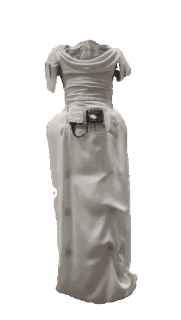

Xochitl Ortega
University of California, Berkeley
Mechanical Engineering B.S. 25'/M.S. 26'
Hi, I'm Xochitl. I design, build, and test physical products.
I'm an M.S. Mechanical Engineer specializing in product development, biomechanics, and wearables. Most recently, I researched menopause-related musculoskeletal fatigue at Aalto University in Finland.
My hands-on experience in mechanical design, prototyping, and analysis comes from engineering 40+ consumer products at L'Oréal and from projects and research at UC Berkeley, Aalto University, and NTU. I also spent four years at UC Berkeley's College of Engineering supporting 400+ students each semester through mentoring and academic support.
I'm drawn to biomedical and healthcare devices, mechanical product design, rapid prototyping, R&D, and textiles. Outside the lab, I sew, do nail art, 3D print, and cook.

Visual Resume
Short gallery walk through of my recent experience
*Click on links to learn more about projects, or on images to enlarge them
Summer 2026
Spring 2026
M.S.